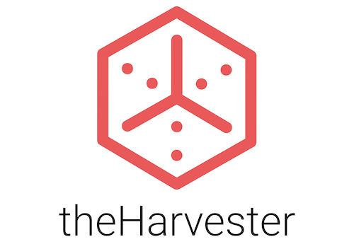
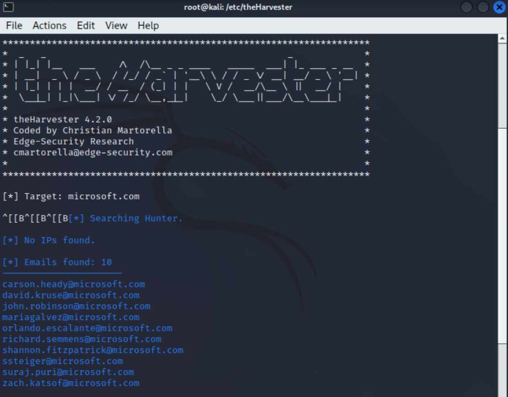

Project: OSINT Reconnaissance Report
Disclosure
This report was created solely for educational and portfolio purposes. All information presented was gathered from publicly available sources, such as search engines, public DNS records, and SEC filings. No scanning, intrusion, or exploitation of Microsoft’s systems was performed. The intent of this project is to demonstrate the process of passive reconnaissance and raise awareness about the types of data that are accessible to potential attackers.
Microsoft has not endorsed or requested this report, and no confidential or proprietary data is included.
Tools Used

theHarvester
Used to identify public emails and subdomains through search engines and external sources.
Whois
Gathered domain registration data including owner, expiration date, and contact info.
SEC EDGAR
Extracted executive names, roles, and other organizational details from public filings.
Purpose
The purpose of this project is to demonstrate how publicly available data can be leveraged by attackers to identify potential attack vectors and risks. The target company chosen is a publicly traded entity, ensuring legality and transparency.
Scope
The scope of this project is strictly passive reconnaissance. Only publicly available data was collected and analyzed. This includes:
- Reviewing public DNS records
- Gathering domain registration details via Whois
- Collecting publicly available email addresses and subdomains using theHarvester
- Extracting executive information from SEC filings
- Using search engines to cross-reference and validate data
Out of Scope:
- No network scanning, port scanning, or vulnerability scanning was conducted
- No attempts were made to exploit systems or gain unauthorized access
- No social engineering or direct contact with Microsoft personnel
Data Sources
- SEC filings
- Search engines
- Public DNS records
Key Findings
Domains and Subdomains
Number of subdomains identified: TBD
Key Executive Names (EDGAR)
7 executive names extracted with positions and start dates.
Publicly Available Emails
10 verified emails identified, confirmed via LinkedIn.
Risk Assessment
Risk Level: Low / Medium / High - justification provided.
Methodology
- Whois Enumeration: Gathered domain registration data including registrant location, email, phone number, and expiration date.
- theHarvester: Identified public emails and subdomains using Bing and URLscan, then integrated Hunter.io API key to generate verified emails.

- 10 verified emails were found, including directors and management team members confirmed via public LinkedIn searches.

- EDGAR Filings Review: Extracted seven executive names along with age, positions, and start dates.

Data Collection & Results
Included raw findings with clear visuals, such as Whois output screenshots, theHarvester results, and SEC filing data snippets.
Analysis
- Potential for phishing campaigns using identified email addresses.
- Vendor risk and third-party exposure mapping.
- Insights into organizational structure useful for social engineering attacks.
Recommendations
- Implement stricter email protection measures.
- Enable DNS security features like DNSSEC.
- Conduct regular audits of publicly available data.
Conclusion
Continuous monitoring of publicly available information is essential. Proactive OSINT practices help organizations minimize exposure and mitigate risks before they can be exploited by adversaries.